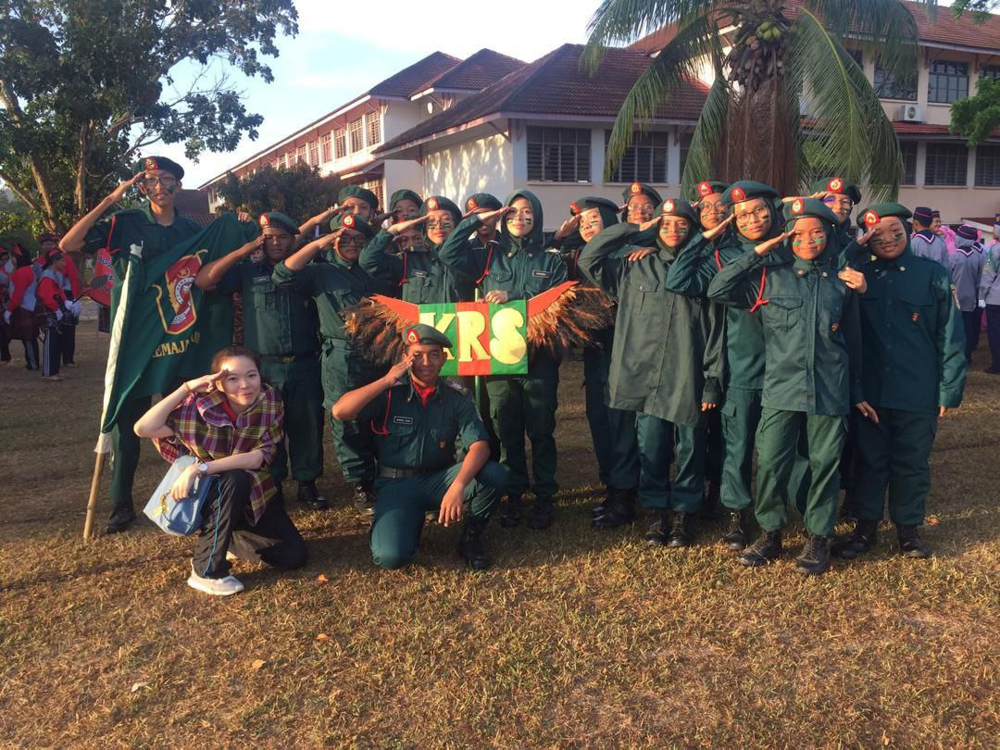

I am currently a member of the High Achiever's Club at UiTM Machang and it has been an incredibly enriching experience so far. Through this club, I am gaining essential skills that will set me up for success in my future career. We are learning proper protocol for interacting with important people. This includes etiquette for formal events and effective networking. The club also trained us on how to do proper paperwork, including proposals and reports.As an active member of the High Achiever's Club at UiTM, I recently had the opportunity to lead the organization of our HAC Silver Screen event. This was a valuable experience in putting into practice the skills I have been learning, such as event planning and management. I collaborated with my fellow club members to secure a venue and promote the event to the university community.This program was a success, with a great turnout and positive feedback from attendees.I was recently appointed to present the club as a moderator during the ESKEP 2024 program. This was an exciting opportunity to introduce the club and its activities to the wider UiTM community.During STPM, I was an active member of the multimedia club. In this club, I was a photographer. I captured engaging visuals for the school's events and activities. I also made video content to showcase the university's achievements.

During my SPM year, I was an active member of Kadet Remaja Sekolah (KRS) and served as the President of my school's KRS unit. In this leadership role, I organized and participated in several district-level camps and training programs.